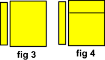

The division tag can be used to divide a page into left and right sections. It can also be used for over and under layouts.
The top section of this page demonstrates dividing a page into left and right sections.
The bottom section demonstrates Nesting and the over under set up. Use View source to study Style Sheet settings for borders, padding , link and background color settings.
If you use this method for web page construction be sure to test your pages in the Internet Explorer, Mozilla and Netscape browsers. If you have all 3, open the browsers to full page view and notice the difference in how this page is displayed. You should also build pages at the lowest resolution possible on your monitor. (640X480 for most)
The division tag can be used as a document container on a web page. It can be used like tables to divide a page into sections. Individual style settings can be used for each different division.
Images can be placed wherever you want, but the alignment property is crucial. All images must be followed by a line break tag with a clear all attribute setting.
You could equalize the two sections by using the height property.
(Netscape 6+)
<div STYLE="width :20%;float : left">Links</div>
<div STYLE="width :79.6%;float : right">Body</div>
For a 20% - 80% split, exclude the border from the right division.
The division tag can be nested. Divisions can be placed within divisions. Individual style settings can be used for each different division.
Images can be placed wherever you want, but the alignment property is crucial. And all images must be followed by a line break tag with a clear all attribute setting.
To equalize the height of the 2 sections use the height property.
Page margins can be set using the padding property for the paragraph tag and other elements within the division. The float property is used to align a division to the left or to the right. The width property determines the width of the division.
<div STYLE="width :30%;float : left">Links</div>
<div STYLE="width :69.6%;float : right">
<div>Heading</div>
<div>Body</div>
</div>
For a 30% - 70% split, exclude the border on the right division.
Page Structure
Basic HTML PageText Controls
Style SheetsTables
Basics of TablesFrames
Basic FramesMiscellaneous
Using Color